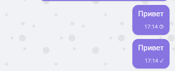
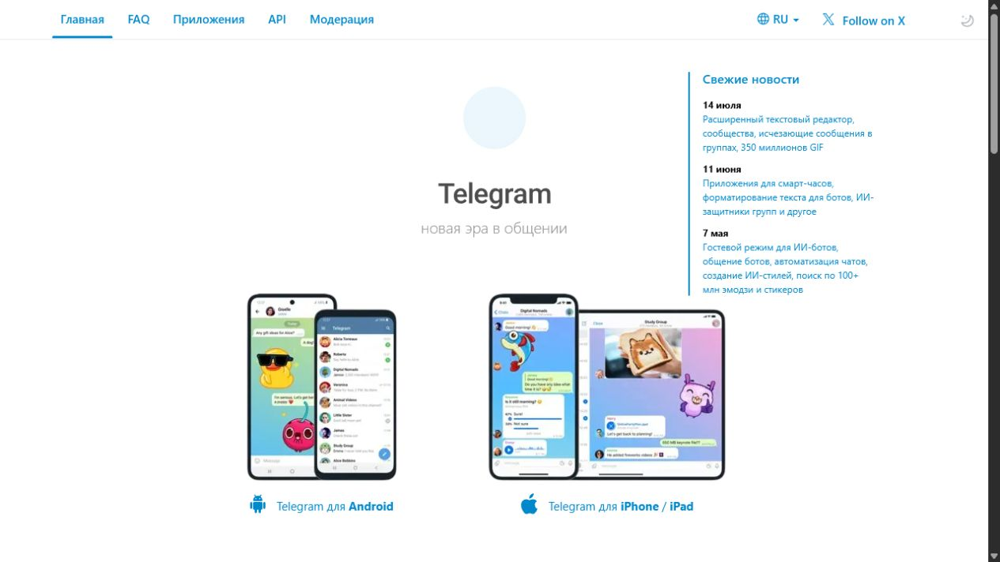
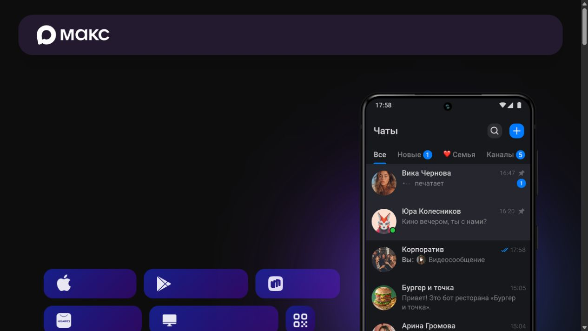

Design Improvement: переключение Telegram / MAX
TL;DR. В светлой теме Telegram должен оставаться чистым cyan-blue, а MAX — заметно более фиолетовым с лавандовыми поверхностями. Это позволяет определить активный канал ещё до чтения подписи.
Текущее состояние

Текущий web-чат: компактная структура уже подходит для операторской работы, но визуальная идентичность каналов нуждалась в более сильном различии.
Улучшение
1. Развести цветовые семейства каналов ⭐
Telegram использует #229ED9; MAX в светлой теме переведён на #6D28D9, лавандовые input/sidebar поверхности и отдельный hover. Цвет меняется плавно вместе со всем рабочим пространством.
Telegram #229ED9MAX #6D28D9MAX surface #F3EDFF
Почему это работает
Официальные страницы показывают разные визуальные характеры: Telegram опирается на ясный голубой акцент, MAX — на более насыщенную сине-фиолетовую айдентику. В CRM это различие усилено без изменения знакомого расположения элементов.
┌ Telegram ─────────────────┐ ┌ MAX ──────────────────────┐
│ cyan accent / white │ │ purple accent / lavender │
│ [диалоги] [сообщения] │ │ [диалоги] [сообщения] │
└───────────────────────────┘ └───────────────────────────┘
Что уже работает
- Переключатель каналов расположен предсказуемо и всегда виден.
- Карточки сообщений компактны и не перегружают экран.
- Анимация темы поддерживает ощущение единого приложения.
Источники

Telegram Messenger — официальный сайт, голубая визуальная идентичность. [Web]

MAX — официальный сайт, сине-фиолетовая визуальная идентичность. [Web]